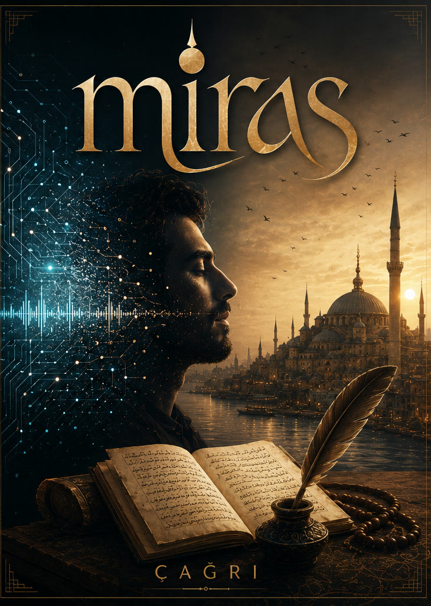
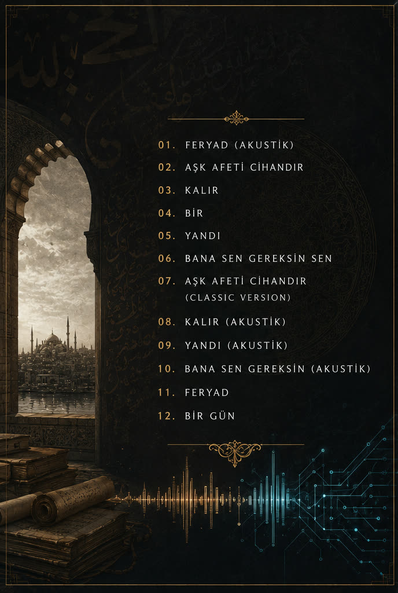
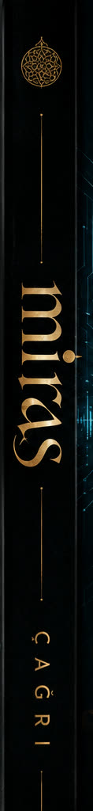

Çağrı
mras
Kadim bir sesin dijital yankısı
Hoca Ahmed Yesevî'nin hikmetinden Fuzûlî'nin gazeline, oradan bugünün şiirine: asırların sözü yeni bir sesle yankılanıyor. On iki eserlik bir yolculuk; feryattan vuslata, aşkın afetinden geriye kalana.
- Eser
- 12
- Süre
- 50 dk
- Yıl
- 2026



Şarkılar
12 eser · 50 dakika · Yesevî'den Fuzûlî'ye ve bugüne
Albüm Hakkında
Miras, adının hakkını veren bir albüm: burada her şarkının sözü bir şaire emanet. On ikinci yüzyıldan Hoca Ahmed Yesevî, on altıncı yüzyıldan Fuzûlî ve günümüzden Nurullah Genç; dokuz asrın dizeleri aynı sofrada buluşuyor. Kapaktaki buluşma albümün de özeti: hattatın mürekkebi ile devrenin ışığı, aynı yüzün iki yarısı.
Bana Sen Gereksin Sen ile Feryad, Yesevî'nin Dîvân-ı Hikmet'inden süzülen hikmetlerin bugünkü Türkçeyle söylenişi; Feryad'ın son dörtlüğündeki Kul Ahmed imzası, Yesevî'nin hikmetlerini mühürlediği alçakgönüllü mahlasıdır. Aşk Afeti Cihandır, Fuzûlî'nin dillerden düşmeyen gazeli. Kalır, Bir ve Yandı, Nurullah Genç'in şiirlerinden doğdu. Bir Gün ise Yesevî'nin, Rabbinin didarına erip eremeyeceğini yaş yaş sorduğu hikmetlerinin izinde serbest bir yorum; albümü bir dua gibi kapatıyor. Feryattan vuslata uzanan bu yolculukta aynı dert, üç ayrı çağın ağzından dinleniyor.
“Miras, hatırlamanın en yeni yolu.”
Çağrı
Bu albümde besteler, düzenlemeler ve vokaller yapay zekâ teknolojileriyle üretildi. Sözler, adı geçen şairlerin eserlerinden alınmıştır ve hakları sahiplerine aittir. Çağrı, bu mirası bugünün diliyle söylemek için var.